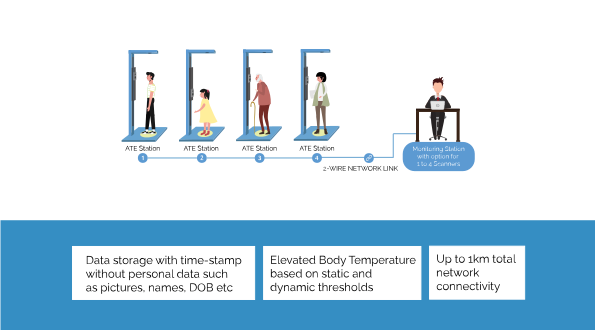

Avatar Thermal Eye Mini
This unique state of the art AVATAR product employs a NON-CONTACT infra-red MEDICAL GRADE infra red thermal sensor to capture the radiated temperature emitted from human body.

1. Intelligent identification of thermal points to avoid human error
2. Automated scanning to prevent human contact during contagious disease spread
3. Accuracy of +/- 0.3 degrees Celsius to reduce false positive/negative cases
4. Industrial Quality Mechanical and Electronic components
5. Medical grade sensors
6. Falls well within FDA recommendations of accuracy of +/- 0.5 degrees(accuracy of +/-0. 3 degrees for Avatar Thermal Eye
7. LED and Buzzer
8. Data recording with time stamp
1. 12 Point forehead-eye Temperature Scanning
2. Nil Human Error
3. False Positive/Negative case reduction
4. Automated Intelligent Scanner
5. Direct Temperature Measurement
6. Medical grade Temperature Sensor
Downlaod Avatar Thermal Eye Brochure

This unique state of the art AVATAR product employs a NON-CONTACT infra-red MEDICAL GRADE infra red thermal sensor to capture the radiated temperature emitted from human body.